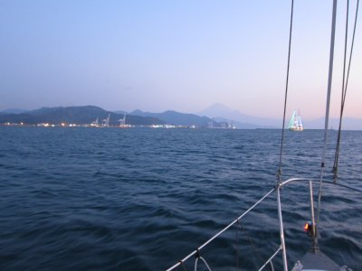
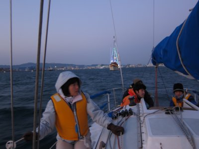
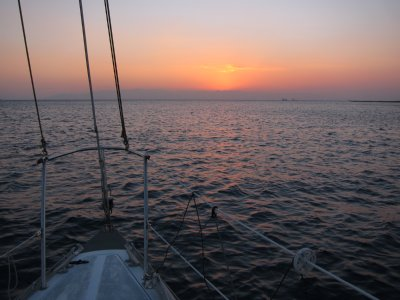

初日の出クルーズ | 2014年1月 |
|---|---|
| 毎年のことで恐縮ですが、初日の出はサムちゃんがヨットを出してくれて、清水沖合で洋上初日の出です。 朝6時に清水港へ集合し、出航の準備をします。と言っても、サムちゃんが事前に準備していてくれたので、やることは少ないです。 1月の朝なのに例年ほど寒く無いように感じられます。ただ、沖合は風が吹いているため、本日は風の影響少ない場所でのクルーズです。 私は、新しく購入したウェアラブルカメラがどれだけ映るのか、そちらも気になります。 | |
 夜明け前のハーバー |  段々明るくなってくる。富士山も。 |
| 天気は上々。雲もなく静かな朝です。正月なのに静かすぎませんか？バカ騒ぎしている連中いませんか？ 東の空が白んで来たら出航です。湾内の穏やかな波を滑るように進みます。 年越し用に電飾された船の横を通り過ぎながら、清水港の防波堤を超えます。 富士山が薄闇の中に見えてきました。ちょっと雲と言うか霧がかっている感じです。 | |
|  寒いっちゃ寒いね |  夜明け直前のオレンジ色 |
| 三保の松原ラインより外側に出ると、風と波が高くなるようなので、その内側をぐるぐると廻ります。 次第に東の空の明るさが増してきて、空と海がオレンジ色になっていきます。この瞬間好きだな〜。まだ暗い部分とオレンジ色に染まっていく部分がたまりません。 ついに伊豆半島から2014年初の太陽が顔を出しました。 日の出って、なぜかありがたい気分になりますよね。寒い中で暖かくなって来るからかな。 初日の出を拝んだら、港に戻って船内でお茶会して解散です。 今年もよろしくお願いいたします。 | |
 2014年初日の出！ |  船内でお茶会 |
| 写真＆コメント ｂｙ べっしー | |